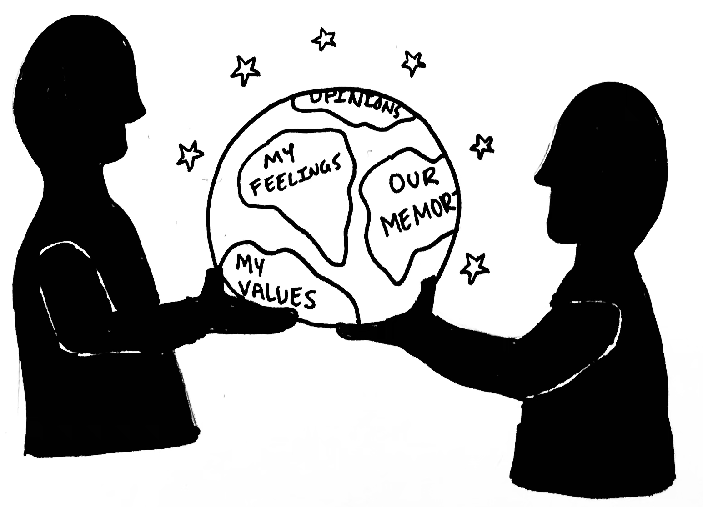

TTL + XQ: Youth Voice Partner
Emotionally Relevant/ Student-Driven PBL
(proposal draft here)
Episode Reflections: Most Popular Episodes:
- Making Friends
- Academic Pressure
- Real Learning vs. School Learning
Pattern: more student (rather than teacher) focused episodes?
XQ + TTL Goals for next episodes
-
Acquire more distribution partners to grow audience (e.g. PRX?)
-
Develop corporate partnerships to feature content (e.g. Common Sense Media, Spotify, or Apple Podcasts)
-
Feature teacher pieces on teacher websites (e.g. partnership with Edutopia?)
TTL + XQ Partnership
Looking Ahead
TTL + XQ Alignment
-
Meaningful, engaged learning
- Caring, trusting relationships
- Youth voice & choice
Our Principles & XQ Learner Outcomes
- Youth as producers, not consumers
- Creative Expression > Information Transmission
- Connection Across Difference > Silos
- Original Thinkers for an Uncertain World
- Generous Collaborators
- Learners for Life

Driving Idea
XQ network-wide, emotionally-driven PBL that builds:
- Caring relationships/authentic connection — amongst students, between teachers & students & across schools
- Elevate Youth Voices —Using TTL platform as tool for real audience and cross-school engagement
Implementation
- Educators fostering belonging/caring relationships: (advisory guides/cards & PD)
- Youth voice: using youth media to connect students/teachers across XQ schools (podcast/blog & student podcast workshops/productions)
Blog as platform for student voice
XQ Student Experiences
TTL could also offer camps & in-person & virtual programming for XQ students to contribute to TTL Episodes.
5 Year Plan 2025-2030:
- TTL Largest Youth Podcast in World
- One-of-a-kind Digital Platform & App
- Making new kinds of Youth Media — books, shows, podcast series
- Codification of Educational Model
- Running youth-driven PD for educators